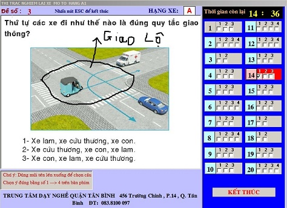
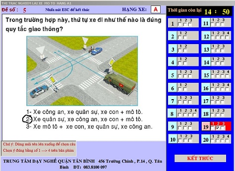
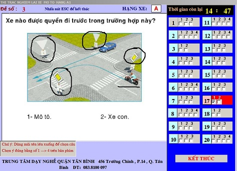
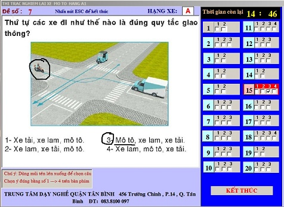
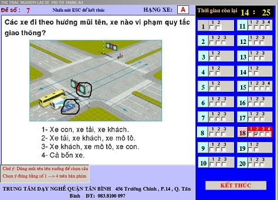
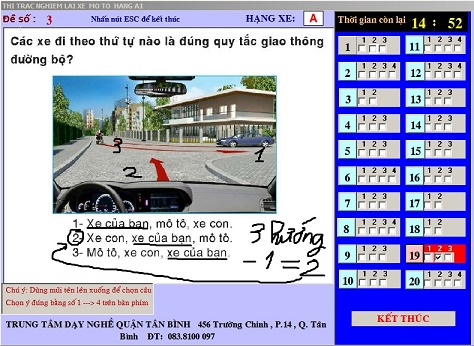
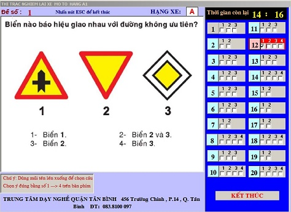
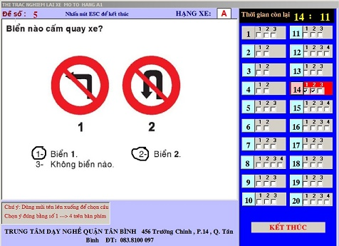

Nhất lộ: Xe nào vào giao lộ được quyền đi trước
Nhị ưu: Xe ưu tiên được quyền đi trước (Quân sự-> Công an-> Cứu hỏa-> Cứu thương).
Tam đường: Xe trên đường ưu tiên được quyền đi trước
Tứ hướng: Rẽ phải->>Đi thẳng->> Rẽ trái
Tiếp theo: Câu hỏi về “Xe nào vi phạm quy tắc giao thông” thì xét “xe con” trước, nếu “xe con vi phạm” thì chọn đáp án “có xe con”; Nếu “xe con không vi phạm” thì loại đáp án có “xe con”, chọn đáp án “không có xe con”.
Ngược lại, câu hỏi về “Xe nào vi chấp hành đúng quy tắc giao thông” thì cũng xét “xe con” trước, nếu “xe con chấp hành“ thì chọn đáp án “có xe con”; nếu “xe con vi phạm” thì loại đáp án có “xe con”.
Tiếp theo, trong câu hỏi “Những xe nào vi phạm quy tắc giao thông”->> Chọn đáp án có từ “Xe con(E)”

Câu hỏi mà đáp án có từ “Xe của bạn” thì đếm số hướng (Ngã 3, ngã 4) sau đó trừ 1 là ra đáp án. Ví dụ 3 hướng thì đáp án là (2)
Chú ý phân biệt 3 biển báo sau:
Biển 1: Có tên là “Giao nhau với đường không ưu tiên”, nghĩa là mình đang đi trên đường lớn (ưu tiên) mà gặp đường bé (ko ưu tiên) cắt ngang qua. Gặp biển này mình được quyền qua nơi giao nhau(được đi trước).
Biển 2: Có tên là “Giao nhau với đường ưu tiên”, biển này ngược lại với biển 1, nghĩa là mình đang đi trên đường bé (ko ưu tiên) gặp đường lớn cắt ngang qua (đường ưu tiên). Gặp biển này mình phải dừng lại nhường đường.
Biển 3: Có tên là “Bắt đầu đoạn đường ưu tiên”, gặp biển này người đang đi trên đường được quyền đi trước.
Nhớ quy tắc sau: “Cấm rẽ trái thì cấm luôn cả quay đầu xe”; Nhưng “Cấm quay đầu xe thì vẫn được rẽ trái”
